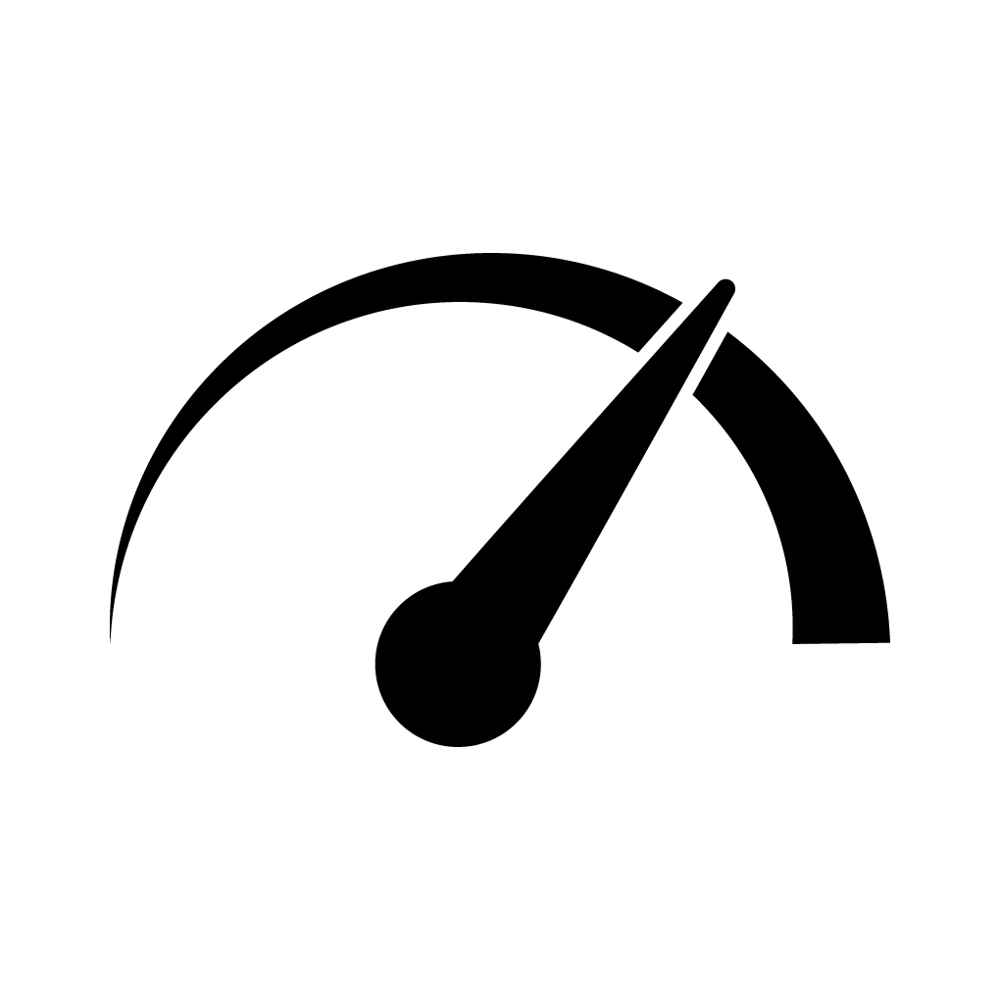
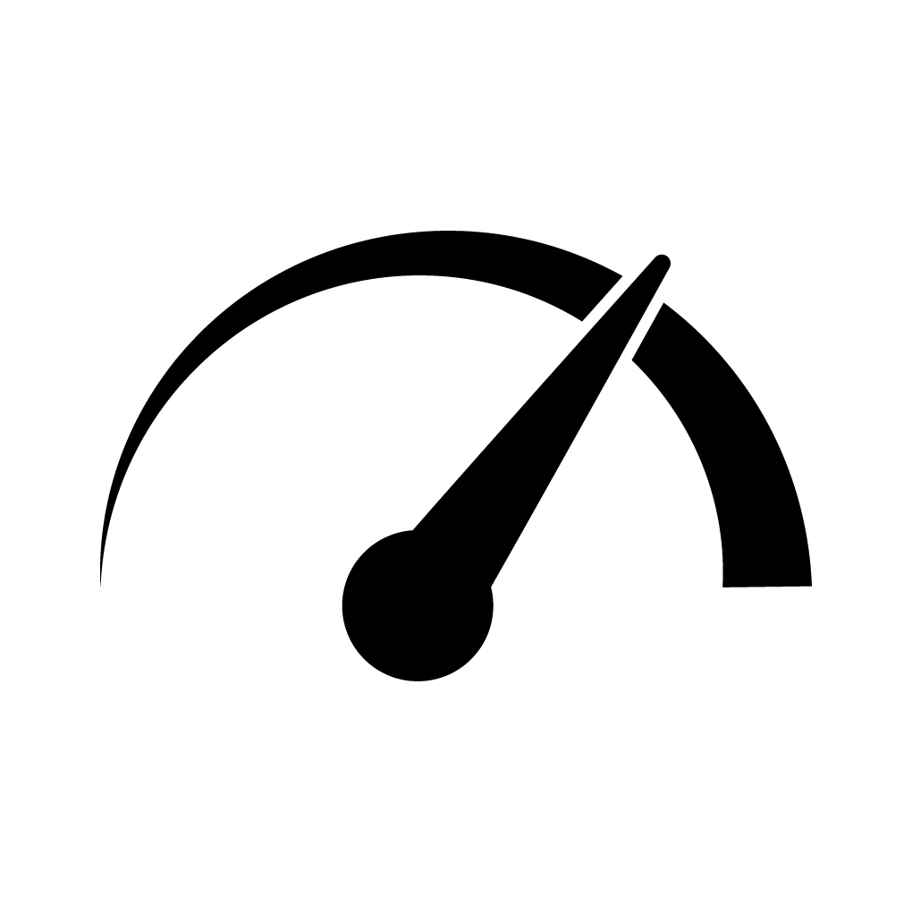
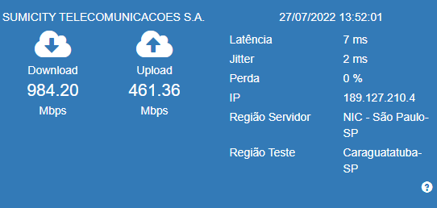
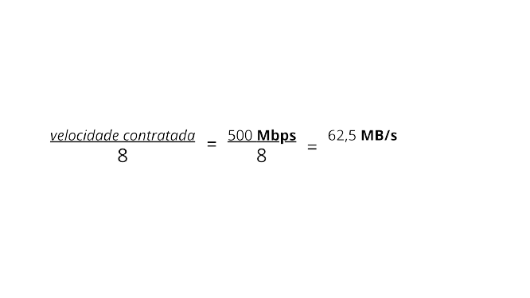

Dica: Como obter resultados mais confiáveis?
- Use a rede cabeada sempre que for utilizar o teste
- Pause todos os downloads;
- Feche os programas que consomem internet;
- Deixe aberta somente a aba do navegador utilizada no teste de velocidade;
- Repita o teste algumas vezes para obter resultados mais precisos;
Atualmente existem inúmeros sites para testar a velocidade, mas o único homologado pela ANATEL* está disponível na página da Entidade Aferidora da Qualidade (EAQ) brasilbandalarga.com.br, ou pelo app disponível para Android e IOS.
*ANATEL – Agência Nacional de Telecomunicações
ATENÇÃO
Para conseguir a máxima velocidade contratada, lembre-se de conectar o modem através do cabo Ethernet (cabo de rede). O Wi-Fi, por conta de bloqueios e interferências pode não apresentar a máxima velocidade.
No exemplo abaixo, note que a velocidade de Download atingiu 984,20 Mbps e Upload 461,36 Mbps, ou seja, as velocidades são medidas em Mbps (megabits por segundo).
Nunca utilize outra forma para medir a velocidade contratada, como por exemplo, executar download. Nesse caso a taxa é medida em Byte e não em bits e mesmo executando a conversão, em muitos casos não conseguimos medir a velocidade real. Para utilizarmos a conversão temos de saber que 8 bits é igual 1 Byte.
Exemplo:
O Cliente que possui uma velocidade contratada de 500Mbps, deverá ter uma taxa de transferência (aproximada) de 62,5 MB/s. Utilizamos a seguinte fórmula:
Note que no exemplo acima a taxa atinge 62,5 MB/s (62,5 MB/s x 8 = 500 Mbps)
Portanto sempre utilizar o site Brasil Banda Larga para testar a sua velocidade.
Clique no botão abaixo e faça agora mesmo seu teste de velocidade.
INICIAR TESTE